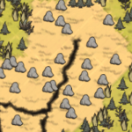

| Rockyland | |
|  |
|
| Abundant | |
| Occasional | |
| Rare | |
| “ | A large sedimentary rock. | ” |
| –Wickerbottom | ||
Rockyland terrain
A tree that spawned in a Rockyland Biome.
Rockland is one of the Biomes in the game.
Rockylands tend to have few things growing on them, although the occasional tree, grass, flower may sneak in. Red Birds and Snowbirds do not spawn here, only Crows.
This is one of the native habitat of Tallbirds and their Nest. In addition, Boulders are plentiful and the entire ground is either covered with Rocky Turf or turfless ground or a combination of those.
Rarely, there is a branch of this biome which is infested with Spider Dens packed together, making traversing quite dangerous as a lot of spiders will be spawned if the player steps on their webs. Gold nuggets laying on the ground may be found in such areas.
Berry Bushes, Saplings, Grass Tufts, Spiky Bushes and Evergreens cannot be planted on Rocky Turf. It must first be removed with a Pitchfork to be able to plant. This turf can then be combined with 1 Board to produce Cobblestones, which are placeable roads.
| Biomes | |
| Surface | Chess • Grasslands • Graveyard • Forest • Marsh • Mosaic • Ocean • Rockyland • Savanna • Desert • Deciduous Forest |
| Caves | Mushtree Forest • Rocky Plains • Stalagmite Biomes • Sunken Forest • Cave Swamps |
| Ruins | Abyss • Labyrinth • Military • Sacred • Village • Wilds |
| Related | Bridges • Map • Road (Trail) • Turfs |
{kind=link}
{kind=link}